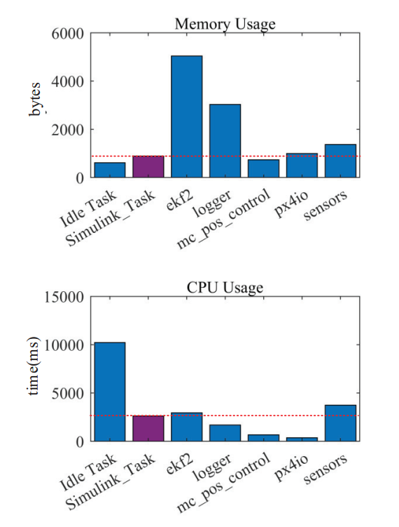

2. System Analysis¶
When deploying algorithms in an embedded system, real-time performance of the algorithm is a very noteworthy issue. For control algorithms, the real-time performance is particularly important because it directly affects the bandwidth and robustness of the control system. We use the time-triggered method to ensure the algorithm runs at a stable frequency, and it can be easily implemented in Simulink with Stateflow schedulers. The underlying control logic of flight control generally adopts hierarchical control. The data update frequency of the sensor in Pixhawk/PX4 autopilot is 250Hz, so we set the execution frequency of the attitude controller to 250Hz. The control frequency of the position control is generally lower than the attitude control, and the bandwidth of the attitude control should be 4 to 10 times of position control, so the execution frequency of the position control is set to 50Hz. The high-level controller does not need a high execution frequency, so the execution frequency of the state machine is set to 5 Hz, and the autonomous flight is set to 50 Hz. The estimator in Pixhawk/PX4 autopilot is directly used for state observation. This further demonstrates the superiority of our platform. Instead of building our flight control system from scratch, we focus mainly on the areas we are interested in, such as the design of attitude control, or state machine.

Through the data recording function, the execution period of each module is obtained. It can be seen that the execution cycle of each module of the system is controlled very accurately. In addition, considering the hardware resource limitation of Pixhawk, the controller or state estimator we design should not be too complicated. Some online optimization methods such as MPC cannot run in real-time with limited computing resources. The memory usage of main tasks running in Pixhawk/PX4 autopilot is shown as follow. It can be seen that the memory usage of the attitude control and position control we design is half of that the autopilot’s. The CPU usage of our attitude control and position control is slightly higher than that in Pixhawk/PX4 autopilot, but the autopilot’s CPU resource remains idle for 30.95% of the time.
